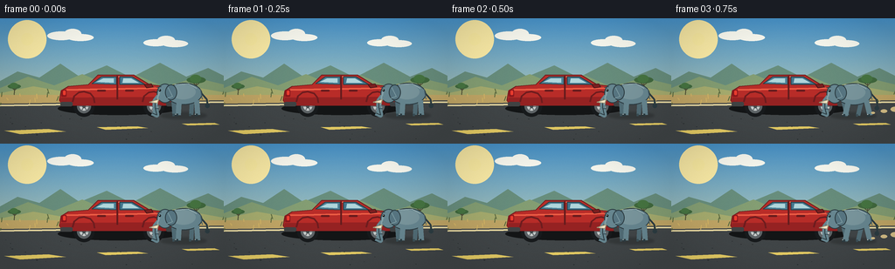
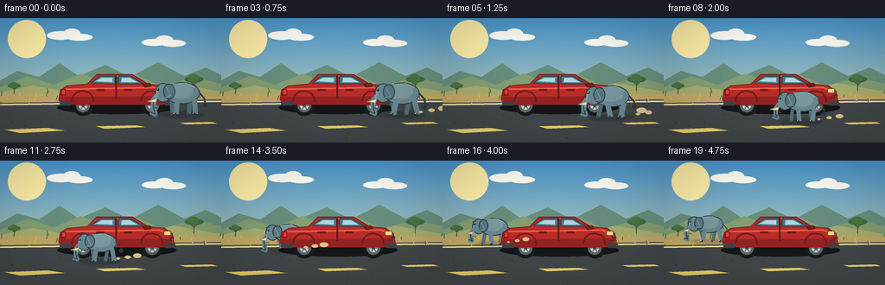
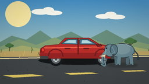
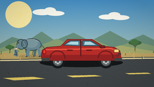

CODING AGENTS AS PIXEL WORLD MODELS
traex/GPT-5.6-Sol · dynamic_spatial_relationship_0065
点击播放 · 原生 RGB 像素
逐轮保存的候选
回放视频、检查图与代码变化。
每份候选均可单独播放。实际图片检查记录在下方工具轨迹中。
候选 01播放与检查图
点击播放 · 原生 RGB 像素


展开代码变化
--- 上一保存版本
+++ 本次保存版本
@@ -0,0 +1,275 @@
+from pathlib import Path
+import json, math
+import numpy as np
+from PIL import Image, ImageDraw, ImageFilter
+import artifact_io
+
+CASE_DIR = Path(__file__).resolve().parent
+SPEC = json.loads((CASE_DIR / 'task_spec.json').read_text())
+W, H = SPEC['width'], SPEC['height']
+N = SPEC['frames']
+S = 4 # supersampling for clean illustrated edges
+
+
+def sc(v): return int(round(v * S))
+def box(b): return tuple(sc(v) for v in b)
+def pts(p): return [(sc(x), sc(y)) for x, y in p]
+
+
+def ellipse(d, b, fill, outline=None, width=1):
+ d.ellipse(box(b), fill=fill, outline=outline, width=sc(width) if outline else 1)
+
+def polygon(d, p, fill, outline=None, width=1):
+ d.polygon(pts(p), fill=fill)
+ if outline:
+ d.line(pts(p + [p[0]]), fill=outline, width=sc(width), joint='curve')
+
+def line(d, p, fill, width=1, joint='curve'):
+ d.line(pts(p), fill=fill, width=sc(width), joint=joint)
+
+def rounded(d, b, radius, fill, outline=None, width=1):
+ d.rounded_rectangle(box(b), radius=sc(radius), fill=fill, outline=outline,
+ width=sc(width) if outline else 1)
+
+
+def make_background():
+ # Painted sky gradient with a mild warm horizon.
+ yy = np.linspace(0, 1, H*S)[:, None, None]
+ top = np.array([74, 151, 207], dtype=float)[None, None, :]
+ bot = np.array([227, 221, 171], dtype=float)[None, None, :]
+ arr = np.repeat(top * (1-yy) + bot * yy, W*S, axis=1).astype(np.uint8)
+ im = Image.fromarray(arr, 'RGB').convert('RGBA')
+ d = ImageDraw.Draw(im, 'RGBA')
+
+ # Sun glow, sun, and feathery clouds.
+ for r, a in [(22, 7), (16, 13), (11, 25)]:
+ ellipse(d, (31-r, 24-r, 31+r, 24+r), (255, 239, 169, a))
+ ellipse(d, (24, 17, 38, 31), (255, 239, 164, 235))
+ for cx, cy, rx, ry in [(70,20,16,5),(83,18,10,6),(92,22,15,4),
+ (178,28,14,4),(190,25,10,5),(200,29,15,4)]:
+ ellipse(d, (cx-rx,cy-ry,cx+rx,cy+ry), (255,255,245,105))
+
+ # Distant hills and scrubland.
+ polygon(d, [(0,72),(20,61),(45,68),(69,52),(91,67),(122,54),(150,68),
+ (183,51),(213,67),(238,57),(256,66),(256,102),(0,102)],
+ (105,143,126,255))
+ polygon(d, [(0,80),(32,67),(62,77),(94,64),(127,78),(156,65),(188,79),
+ (223,68),(256,76),(256,104),(0,104)], (133,159,116,255))
+ polygon(d, [(0,86),(38,78),(78,85),(117,75),(157,87),(200,75),(256,85),
+ (256,108),(0,108)], (168,174,112,255))
+
+ # Acacia silhouettes make the setting readable without competing with subjects.
+ def tree(x, y, k):
+ line(d, [(x,y),(x+1,y-22*k)], (78,79,54,255), max(1,int(2*k)))
+ line(d, [(x+1,y-14*k),(x-6*k,y-20*k)], (78,79,54,255), 1)
+ line(d, [(x+1,y-15*k),(x+8*k,y-21*k)], (78,79,54,255), 1)
+ ellipse(d, (x-14*k,y-28*k,x+15*k,y-18*k), (66,107,63,235))
+ ellipse(d, (x-9*k,y-31*k,x+8*k,y-19*k), (72,119,67,230))
+ tree(224, 88, .75)
+ tree(16, 90, .52)
+
+ # Road shoulder, asphalt and perspective markings.
+ polygon(d, [(0,88),(256,88),(256,101),(0,101)], (195,168,103,255))
+ polygon(d, [(0,98),(256,94),(256,144),(0,144)], (67,72,74,255))
+ line(d, [(0,100),(256,96)], (241,225,167,255), 2)
+ polygon(d, [(5,129),(55,127),(75,130),(23,133)], (237,211,104,225))
+ polygon(d, [(111,125),(157,124),(169,126),(121,128)], (237,211,104,225))
+ polygon(d, [(208,121),(245,120),(251,122),(215,123)], (237,211,104,225))
+
+ # Pebbles and dry grass, all fixed to avoid background flicker.
+ rng = np.random.default_rng(17)
+ for _ in range(40):
+ x = float(rng.uniform(0,256)); y = float(rng.uniform(86,100))
+ col = (91,106,65,190) if rng.random() < .55 else (216,184,103,180)
+ line(d, [(x,y),(x+rng.uniform(-2,2),y-rng.uniform(2,6))], col, 1)
+ for _ in range(18):
+ x = float(rng.uniform(2,254)); y = float(rng.uniform(106,141)); r = float(rng.uniform(.3,1.1))
+ ellipse(d, (x-r,y-r*.45,x+r,y+r*.45), (45,49,51,80))
+
+ # Stable subtle texture, giving the illustration depth without temporal noise.
+ rgb = np.array(im.convert('RGB'), dtype=np.int16)
+ noise = rng.normal(0, 1.15, rgb.shape[:2])[:, :, None]
+ rgb = np.clip(rgb + noise, 0, 255).astype(np.uint8)
+ return Image.fromarray(rgb, 'RGB').convert('RGBA')
+
+
+def draw_shadow(im, x, ground, scale, foreground):
+ layer = Image.new('RGBA', im.size, (0,0,0,0)); d = ImageDraw.Draw(layer, 'RGBA')
+ rx = 25*scale; ry = 4.2*scale
+ alpha = 74 if foreground else 48
+ ellipse(d, (x-rx,ground-3*scale,x+rx,ground+ry), (22,25,24,alpha))
+ layer = layer.filter(ImageFilter.GaussianBlur(sc(1.2)))
+ im.alpha_composite(layer)
+
+
+def draw_car(im):
+ d = ImageDraw.Draw(im, 'RGBA')
+ # Contact shadow.
+ ellipse(d, (66,96,204,111), (20,22,23,105))
+ # Tires (far rim and near rim details).
+ for cx in (96,176):
+ ellipse(d, (cx-12,89,cx+12,113), (24,27,29,255))
+ ellipse(d, (cx-8,93,cx+8,109), (95,101,104,255))
+ ellipse(d, (cx-5,96,cx+5,106), (202,207,206,255))
+ ellipse(d, (cx-2,99,cx+2,103), (68,74,77,255))
+ for a in range(0,360,60):
+ ca,sa=math.cos(math.radians(a)),math.sin(math.radians(a))
+ line(d, [(cx+2*ca,101+2*sa),(cx+5*ca,101+5*sa)], (103,109,111,255), 1)
+
+ # Main red body with a clear right-facing hood and nose.
+ polygon(d, [(70,83),(78,78),(101,76),(112,65),(153,65),(171,76),
+ (190,78),(199,84),(201,95),(196,100),(72,100),(68,94)],
+ (185,45,41,255), (113,31,31,255), 1)
+ # Lower rocker panel and warm highlights.
+ polygon(d, [(70,91),(198,90),(199,96),(194,100),(73,100),(68,95)],
+ (151,35,35,255))
+ line(d, [(76,82),(184,80),(195,84)], (238,94,70,235), 2)
+ line(d, [(116,67),(151,67)], (255,139,105,205), 1)
+
+ # Cabin glass, pillars, handles.
+ polygon(d, [(105,75),(116,67),(133,67),(133,76)], (78,130,151,255), (43,65,72,255), 1)
+ polygon(d, [(137,67),(151,67),(166,76),(137,76)], (68,119,142,255), (43,65,72,255), 1)
+ polygon(d, [(110,73),(118,69),(130,69),(130,74)], (176,215,220,95))
+ polygon(d, [(141,69),(150,69),(159,74),(140,74)], (177,215,220,80))
+ line(d, [(134,66),(134,93)], (101,29,30,255), 2)
+ rounded(d, (143,82,153,84), 1, (104,28,30,255))
+ rounded(d, (111,82,121,84), 1, (104,28,30,255))
+ # Mirror, lights, bumper and readable front grille.
+ polygon(d, [(165,76),(173,75),(175,79),(168,80)], (126,31,32,255), (76,25,27,255), 1)
+ rounded(d, (189,81,198,87), 2, (255,221,130,255), (120,68,44,255), 1)
+ rounded(d, (70,82,76,90), 1, (143,24,29,255))
+ rounded(d, (72,83,75,88), 1, (239,62,47,255))
+ line(d, [(196,89),(201,89)], (53,55,55,255), 2)
+ line(d, [(193,92),(199,92)], (66,51,49,255), 1)
+ rounded(d, (69,96,83,101), 2, (65,68,69,255))
+ rounded(d, (190,96,203,101), 2, (65,68,69,255))
+ # Wheel arch lips laid over wheel tops.
+ for cx in (96,176):
+ line(d, [(cx-13,96),(cx-11,89),(cx-6,85),(cx,84),(cx+7,86),(cx+11,91),(cx+12,97)],
+ (111,29,31,255), 2)
+
+
+def draw_elephant(im, x, ground, scale, phase, foreground=True):
+ d = ImageDraw.Draw(im, 'RGBA')
+ def P(px, py): return (x + px*scale, ground + py*scale)
+ def B(x0,y0,x1,y1):
+ a=P(x0,y0); b=P(x1,y1); return (a[0],a[1],b[0],b[1])
+ def PP(seq): return [P(a,b) for a,b in seq]
+
+ outline=(45,61,67,255)
+ far=(83,111,121,255)
+ body=(105,137,147,255)
+ light=(133,163,169,255)
+ ear=(89,120,132,255)
+ # leg gait (two alternating leg pairs); feet stay close to road.
+ swing=math.sin(phase)*4.0
+ far_legs=[(-11,-17,-11+swing,0),(9,-17,9-swing,0)]
+ near_legs=[(-5,-17,-5-swing,0),(14,-16,14+swing,0)]
+ for x0,y0,x1,y1 in far_legs:
+ line(d, [P(x0,y0),P(x1,y1)], far, max(3,int(5*scale)))
+ line(d, [P(x1,y1),P(x1-2,y1)], (61,82,90,255), max(2,int(3*scale)))
+
+ # Tail behind body, with a swinging tuft.
+ tail_s=math.sin(phase*.7)*3
+ line(d, [P(18,-25),P(25,-17),P(26,-11+tail_s)], outline, max(1,int(2*scale)))
+ ellipse(d, B(23,-13+tail_s,28,-8+tail_s), outline)
+
+ # Torso and shoulder modeling.
+ ellipse(d, B(-19,-35,20,-11), body, outline, 1)
+ ellipse(d, B(-14,-33,13,-17), (124,153,160,150))
+ line(d, [P(18,-28),P(20,-17)], (74,101,111,170), 1)
+
+ # Head and broad African elephant ear.
+ ellipse(d, B(-29,-34,-11,-13), body, outline, 1)
+ ellipse(d, B(-20,-33,-7,-16), ear, outline, 1)
+ line(d, [P(-17,-30),P(-12,-20),P(-18,-18)], (126,157,164,180), 1)
+
+ # Trunk is a curved, expressive line; its tip bobs while walking.
+ bob=math.sin(phase+1.0)*2.0
+ trunk=[P(-27,-20),P(-31,-15),P(-31,-8),P(-29,-2+bob),P(-34,-4+bob)]
+ line(d, trunk, body, max(4,int(6*scale)))
+ line(d, trunk, outline, 1)
+ # Forehead/trunk highlight.
+ line(d, [P(-26,-27),P(-28,-19),P(-29,-11)], light, max(1,int(2*scale)))
+
+ # Tusk, eye, brow, and ear accents make the animal unmistakable.
+ polygon(d, PP([(-27,-17),(-37,-14),(-28,-13)]), (246,235,202,255), (156,145,116,255), 1)
+ ellipse(d, B(-27.0,-28.0,-24.5,-25.5), (24,29,30,255))
+ ellipse(d, B(-26.5,-27.7,-25.7,-26.9), (245,245,225,255))
+ line(d, [P(-29,-30),P(-24,-31)], (54,70,76,230), 1)
+
+ # Near legs on top of the torso edge.
+ for x0,y0,x1,y1 in near_legs:
+ line(d, [P(x0,y0),P(x1,y1)], body, max(4,int(6*scale)))
+ line(d, [P(x1,y1),P(x1-3,y1)], outline, max(2,int(3*scale)))
+ # small toenail marks
+ line(d, [P(x1-3,y1-1),P(x1-2,y1-1)], (184,196,194,220), 1)
+ # Body highlight and subtle wrinkles.
+ line(d, [P(-10,-33),P(5,-34),P(14,-29)], (158,181,184,150), 1)
+ line(d, [P(-28,-11),P(-24,-10)], (61,83,91,170), 1)
+ line(d, [P(-30,-7),P(-27,-7)], (61,83,91,160), 1)
+
+
+def draw_dust(im, x, ground, scale, activity, frame):
+ if activity <= 0.02:
+ return
+ d=ImageDraw.Draw(im,'RGBA')
+ # Dust trails to the right since the elephant walks left.
+ for j in range(3):
+ life=((frame*.38+j*.31)%1.0)
+ px=x+(19+16*life+7*j)*scale
+ py=ground-(2+6*life)*scale
+ r=(1.5+4.5*life)*scale
+ alpha=int((1-life)*54*activity)
+ ellipse(d,(px-r,py-r*.55,px+r,py+r*.55),(220,196,139,alpha))
+
+
+def add_finish(im):
+ # A tiny vignette focuses attention on the action.
+ arr=np.array(im.convert('RGB'),dtype=np.float32)
+ yy,xx=np.mgrid[0:H*S,0:W*S]
+ dx=(xx-W*S/2)/(W*S/2); dy=(yy-H*S/2)/(H*S/2)
+ vig=np.clip(1-0.09*(dx*dx+dy*dy),.86,1)[:,:,None]
+ arr=np.clip(arr*vig,0,255).astype(np.uint8)
+ out=Image.fromarray(arr,'RGB').resize((W,H),Image.Resampling.LANCZOS)
+ return np.asarray(out,dtype=np.uint8)
+
+
+def smoothstep(t):
+ t=max(0.0,min(1.0,t)); return t*t*(3-2*t)
+
+
+def generate():
+ bg=make_background()
+ frames=[]
+ for i in range(N):
+ # Three-frame establishing hold, then a smooth walk, then a two-frame arrival hold.
+ raw=(i-2)/16.0
+ q=smoothstep(raw)
+ x=210*(1-q)+52*q
+ # The elephant walks around the near side and curves behind the car at its rear.
+ ground=111 + 12*math.sin(math.pi*q) - 18*(q*q)
+ scale=1.06*(1-q)+0.84*q
+ moving=1.0 if 0.01 < q < 0.99 else 0.0
+ phase=(i-2)*1.65 if moving else (0.25 if q<.5 else 2.2)
+ foreground=ground >= 104.0
+
+ im=bg.copy()
+ draw_shadow(im,x,ground,scale,foreground)
+ if foreground:
+ draw_car(im)
+ draw_elephant(im,x,ground,scale,phase,True)
+ else:
+ # In the final position the rear corner of the car occludes the elephant,
+ # unambiguously placing it behind/back of the car.
+ draw_elephant(im,x,ground,scale,phase,False)
+ draw_car(im)
+ draw_dust(im,x,ground,scale,moving,i)
+ frames.append(add_finish(im))
+ frames=np.stack(frames,axis=0).astype(np.uint8)
+ artifact_io.save(frames, CASE_DIR)
+ return frames
+
+
+if __name__ == '__main__':
+ generate()
可观测工具轨迹
实际执行的命令与返回图片。
命令 1exit 0
/bin/bash -lc "cat prompt.txt && printf '\\n--- GENERATION_RULES ---\\n' && cat GENERATION_RULES.md"
命令 2exit 0
/bin/bash -lc "cat task_spec.json && printf '\\n--- FILES ---\\n' && find . -maxdepth 2 -type f -printf '%p\\n' | sort"
命令 3exit 0
/bin/bash -lc "command -v ffmpeg; command -v python3; python3 - <<'PY' mods=['PIL','numpy','cv2','imageio','moviepy'] for m in mods: try: x=__import__(m); print(m,'OK',getattr(x,'__version__','')) except Exception as e: print(m,'NO',e) PY"
命令 4exit 0
/bin/bash -lc "sed -n '1,240p' artifact_io.py"
命令 5exit 0
/bin/bash -lc "cat > generate.py <<'PY'
from pathlib import Path
import json, math
import numpy as np
from PIL import Image, ImageDraw, ImageFilter
import artifact_io
CASE_DIR = Path(__file__).resolve().parent
SPEC = json.loads((CASE_DIR / 'task_spec.json').read_text())
W, H = SPEC['width'], SPEC['height']
N = SPEC['frames']
S = 4 # supersampling for clean illustrated edges
def sc(v): return int(round(v * S))
def box(b): return tuple(sc(v) for v in b)
def pts(p): return [(sc(x), sc(y)) for x, y in p]
def ellipse(d, b, fill, outline=None, width=1):
d.ellipse(box(b), fill=fill, outline=outline, width=sc(width) if outline else 1)
def polygon(d, p, fill, outline=None, width=1):
d.polygon(pts(p), fill=fill)
if outline:
d.line(pts(p + [p[0]]), fill=outline, width=sc(width), joint='curve')
def line(d, p, fill, width=1, joint='curve'):
d.line(pts(p), fill=fill, width=sc(width), joint=joint)
def rounded(d, b, radius, fill, outline=None, width=1):
d.rounded_rectangle(box(b), radius=sc(radius), fill=fill, outline=outline,
width=sc(width) if outline else 1)
def make_background():
# Painted sky gradient with a mild warm horizon.
yy = np.linspace(0, 1, H*S)[:, None, None]
top = np.array([74, 151, 207], dtype=float)[None, None, :]
bot = np.array([227, 221, 171], dtype=float)[None, None, :]
arr = np.repeat(top * (1-yy) + bot * yy, W*S, axis=1).astype(np.uint8)
im = Image.fromarray(arr, 'RGB').convert('RGBA')
d = ImageDraw.Draw(im, 'RGBA')
# Sun glow, sun, and feathery clouds.
for r, a in [(22, 7), (16, 13), (11, 25)]:
ellipse(d, (31-r, 24-r, 31+r, 24+r), (255, 239, 169, a))
ellipse(d, (24, 17, 38, 31), (255, 239, 164, 235))
for cx, cy, rx, ry in [(70,20,16,5),(83,18,10,6),(92,22,15,4),
(178,28,14,4),(190,25,10,5),(200,29,15,4)]:
ellipse(d, (cx-rx,cy-ry,cx+rx,cy+ry), (255,255,245,105))
# Distant hills and scrubland.
polygon(d, [(0,72),(20,61),(45,68),(69,52),(91,67),(122,54),(150,68),
(183,51),(213,67),(238,57),(256,66),(256,102),(0,102)],
(105,143,126,255))
polygon(d, [(0,80),(32,67),(62,77),(94,64),(127,78),(156,65),(188,79),
(223,68),(256,76),(256,104),(0,104)], (133,159,116,255))
polygon(d, [(0,86),(38,78),(78,85),(117,75),(157,87),(200,75),(256,85),
(256,108),(0,108)], (168,174,112,255))
# Acacia silhouettes make the setting readable without competing with subjects.
def tree(x, y, k):
line(d, [(x,y),(x+1,y-22*k)], (78,79,54,255), max(1,int(2*k)))
line(d, [(x+1,y-14*k),(x-6*k,y-20*k)], (78,79,54,255), 1)
line(d, [(x+1,y-15*k),(x+8*k,y-21*k)], (78,79,54,255), 1)
ellipse(d, (x-14*k,y-28*k,x+15*k,y-18*k), (66,107,63,235))
ellipse(d, (x-9*k,y-31*k,x+8*k,y-19*k), (72,119,67,230))
tree(224, 88, .75)
tree(16, 90, .52)
# Road shoulder, asphalt and perspective markings.
polygon(d, [(0,88),(256,88),(256,101),(0,101)], (195,168,103,255))
polygon(d, [(0,98),(256,94),(256,144),(0,144)], (67,72,74,255))
line(d, [(0,100),(256,96)], (241,225,167,255), 2)
polygon(d, [(5,129),(55,127),(75,130),(23,133)], (237,211,104,225))
polygon(d, [(111,125),(157,124),(169,126),(121,128)], (237,211,104,225))
polygon(d, [(208,121),(245,120),(251,122),(215,123)], (237,211,104,225))
# Pebbles and dry grass, all fixed to avoid background flicker.
rng = np.random.default_rng(17)
for _ in range(40):
x = float(rng.uniform(0,256)); y = float(rng.uniform(86,100))
col = (91,106,65,190) if rng.random() < .55 else (216,184,103,180)
line(d, [(x,y),(x+rng.uniform(-2,2),y-rng.uniform(2,6))], col, 1)
for _ in range(18):
x = float(rng.uniform(2,254)); y = float(rng.uniform(106,141)); r = float(rng.uniform(.3,1.1))
ellipse(d, (x-r,y-r*.45,x+r,y+r*.45), (45,49,51,80))
# Stable subtle texture, giving the illustration depth without temporal noise.
rgb = np.array(im.convert('RGB'), dtype=np.int16)
noise = rng.normal(0, 1.15, rgb.shape[:2])[:, :, None]
rgb = np.clip(rgb + noise, 0, 255).astype(np.uint8)
return Image.fromarray(rgb, 'RGB').convert('RGBA')
def draw_shadow(im, x, ground, scale, foreground):
layer = Image.new('RGBA', im.size, (0,0,0,0)); d = ImageDraw.Draw(layer, 'RGBA')
rx = 25*scale; ry = 4.2*scale
alpha = 74 if foreground else 48
ellipse(d, (x-rx,ground-3*scale,x+rx,ground+ry), (22,25,24,alpha))
layer = layer.filter(ImageFilter.GaussianBlur(sc(1.2)))
im.alpha_composite(layer)
def draw_car(im):
d = ImageDraw.Draw(im, 'RGBA')
# Contact shadow.
ellipse(d, (66,96,204,111), (20,22,23,105))
# Tires (far rim and near rim details).
for cx in (96,176):
ellipse(d, (cx-12,89,cx+12,113), (24,27,29,255))
ellipse(d, (cx-8,93,cx+8,109), (95,101,104,255))
ellipse(d, (cx-5,96,cx+5,106), (202,207,206,255))
ellipse(d, (cx-2,99,cx+2,103), (68,74,77,255))
for a in range(0,360,60):
ca,sa=math.cos(math.radians(a)),math.sin(math.radians(a))
line(d, [(cx+2*ca,101+2*sa),(cx+5*ca,101+5*sa)], (103,109,111,255), 1)
# Main red body with a clear right-facing hood and nose.
polygon(d, [(70,83),(78,78),(101,76),(112,65),(153,65),(171,76),
(190,78),(199,84),(201,95),(196,100),(72,100),(68,94)],
(185,45,41,255), (113,31,31,255), 1)
# Lower rocker panel and warm highlights.
polygon(d, [(70,91),(198,90),(199,96),(194,100),(73,100),(68,95)],
(151,35,35,255))
line(d, [(76,82),(184,80),(195,84)], (238,94,70,235), 2)
line(d, [(116,67),(151,67)], (255,139,105,205), 1)
# Cabin glass, pillars, handles.
polygon(d, [(105,75),(116,67),(133,67),(133,76)], (78,130,151,255), (43,65,72,255), 1)
polygon(d, [(137,67),(151,67),(166,76),(137,76)], (68,119,142,255), (43,65,72,255), 1)
polygon(d, [(110,73),(118,69),(130,69),(130,74)], (176,215,220,95))
polygon(d, [(141,69),(150,69),(159,74),(140,74)], (177,215,220,80))
line(d, [(134,66),(134,93)], (101,29,30,255), 2)
rounded(d, (143,82,153,84), 1, (104,28,30,255))
rounded(d, (111,82,121,84), 1, (104,28,30,255))
# Mirror, lights, bumper and readable front grille.
polygon(d, [(165,76),(173,75),(175,79),(168,80)], (126,31,32,255), (76,25,27,255), 1)
rounded(d, (189,81,198,87), 2, (255,221,130,255), (120,68,44,255), 1)
rounded(d, (70,82,76,90), 1, (143,24,29,255))
rounded(d, (72,83,75,88), 1, (239,62,47,255))
line(d, [(196,89),(201,89)], (53,55,55,255), 2)
line(d, [(193,92),(199,92)], (66,51,49,255), 1)
rounded(d, (69,96,83,101), 2, (65,68,69,255))
rounded(d, (190,96,203,101), 2, (65,68,69,255))
# Wheel arch lips laid over wheel tops.
for cx in (96,176):
line(d, [(cx-13,96),(cx-11,89),(cx-6,85),(cx,84),(cx+7,86),(cx+11,91),(cx+12,97)],
(111,29,31,255), 2)
def draw_elephant(im, x, ground, scale, phase, foreground=True):
d = ImageDraw.Draw(im, 'RGBA')
def P(px, py): return (x + px*scale, ground + py*scale)
def B(x0,y0,x1,y1):
a=P(x0,y0); b=P(x1,y1); return (a[0],a[1],b[0],b[1])
def PP(seq): return [P(a,b) for a,b in seq]
outline=(45,61,67,255)
far=(83,111,121,255)
body=(105,137,147,255)
light=(133,163,169,255)
ear=(89,120,132,255)
# leg gait (two alternating leg pairs); feet stay close to road.
swing=math.sin(phase)*4.0
far_legs=[(-11,-17,-11+swing,0),(9,-17,9-swing,0)]
near_legs=[(-5,-17,-5-swing,0),(14,-16,14+swing,0)]
for x0,y0,x1,y1 in far_legs:
line(d, [P(x0,y0),P(x1,y1)], far, max(3,int(5*scale)))
line(d, [P(x1,y1),P(x1-2,y1)], (61,82,90,255), max(2,int(3*scale)))
# Tail behind body, with a swinging tuft.
tail_s=math.sin(phase*.7)*3
line(d, [P(18,-25),P(25,-17),P(26,-11+tail_s)], outline, max(1,int(2*scale)))
ellipse(d, B(23,-13+tail_s,28,-8+tail_s), outline)
# Torso and shoulder modeling.
ellipse(d, B(-19,-35,20,-11), body, outline, 1)
ellipse(d, B(-14,-33,13,-17), (124,153,160,150))
line(d, [P(18,-28),P(20,-17)], (74,101,111,170), 1)
# Head and broad African elephant ear.
ellipse(d, B(-29,-34,-11,-13), body, outline, 1)
ellipse(d, B(-20,-33,-7,-16), ear, outline, 1)
line(d, [P(-17,-30),P(-12,-20),P(-18,-18)], (126,157,164,180), 1)
# Trunk is a curved, expressive line; its tip bobs while walking.
bob=math.sin(phase+1.0)*2.0
trunk=[P(-27,-20),P(-31,-15),P(-31,-8),P(-29,-2+bob),P(-34,-4+bob)]
line(d, trunk, body, max(4,int(6*scale)))
line(d, trunk, outline, 1)
# Forehead/trunk highlight.
line(d, [P(-26,-27),P(-28,-19),P(-29,-11)], light, max(1,int(2*scale)))
# Tusk, eye, brow, and ear accents make the animal unmistakable.
polygon(d, PP([(-27,-17),(-37,-14),(-28,-13)]), (246,235,202,255), (156,145,116,255), 1)
ellipse(d, B(-27.0,-28.0,-24.5,-25.5), (24,29,30,255))
ellipse(d, B(-26.5,-27.7,-25.7,-26.9), (245,245,225,255))
line(d, [P(-29,-30),P(-24,-31)], (54,70,76,230), 1)
# Near legs on top of the torso edge.
for x0,y0,x1,y1 in near_legs:
line(d, [P(x0,y0),P(x1,y1)], body, max(4,int(6*scale)))
line(d, [P(x1,y1),P(x1-3,y1)], outline, max(2,int(3*scale)))
# small toenail marks
line(d, [P(x1-3,y1-1),P(x1-2,y1-1)], (184,196,194,220), 1)
# Body highlight and subtle wrinkles.
line(d, [P(-10,-33),P(5,-34),P(14,-29)], (158,181,184,150), 1)
line(d, [P(-28,-11),P(-24,-10)], (61,83,91,170), 1)
line(d, [P(-30,-7),P(-27,-7)], (61,83,91,160), 1)
def draw_dust(im, x, ground, scale, activity, frame):
if activity <= 0.02:
return
d=ImageDraw.Draw(im,'RGBA')
# Dust trails to the right since the elephant walks left.
for j in range(3):
life=((frame*.38+j*.31)%1.0)
px=x+(19+16*life+7*j)*scale
py=ground-(2+6*life)*scale
r=(1.5+4.5*life)*scale
alpha=int((1-life)*54*activity)
ellipse(d,(px-r,py-r*.55,px+r,py+r*.55),(220,196,139,alpha))
def add_finish(im):
# A tiny vignette focuses attention on the action.
arr=np.array(im.convert('RGB'),dtype=np.float32)
yy,xx=np.mgrid[0:H*S,0:W*S]
dx=(xx-W*S/2)/(W*S/2); dy=(yy-H*S/2)/(H*S/2)
vig=np.clip(1-0.09*(dx*dx+dy*dy),.86,1)[:,:,None]
arr=np.clip(arr*vig,0,255).astype(np.uint8)
out=Image.fromarray(arr,'RGB').resize((W,H),Image.Resampling.LANCZOS)
return np.asarray(out,dtype=np.uint8)
def smoothstep(t):
t=max(0.0,min(1.0,t)); return t*t*(3-2*t)
def generate():
bg=make_background()
frames=[]
for i in range(N):
# Three-frame establishing hold, then a smooth walk, then a two-frame arrival hold.
raw=(i-2)/16.0
q=smoothstep(raw)
x=210*(1-q)+52*q
# The elephant walks around the near side and curves behind the car at its rear.
ground=111 + 12*math.sin(math.pi*q) - 18*(q*q)
scale=1.06*(1-q)+0.84*q
moving=1.0 if 0.01 < q < 0.99 else 0.0
phase=(i-2)*1.65 if moving else (0.25 if q<.5 else 2.2)
foreground=ground >= 104.0
im=bg.copy()
draw_shadow(im,x,ground,scale,foreground)
if foreground:
draw_car(im)
draw_elephant(im,x,ground,scale,phase,True)
else:
# In the final position the rear corner of the car occludes the elephant,
# unambiguously placing it behind/back of the car.
draw_elephant(im,x,ground,scale,phase,False)
draw_car(im)
draw_dust(im,x,ground,scale,moving,i)
frames.append(add_finish(im))
frames=np.stack(frames,axis=0).astype(np.uint8)
artifact_io.save(frames, CASE_DIR)
return frames
if __name__ == '__main__':
generate()
PY
python3 generate.py
python3 - <<'PY'
from pathlib import Path
import numpy as np
from PIL import Image
p=Path('.')
z=np.load('pixels.npz')['pixels']
print('pixels',z.shape,z.dtype,'frames',len(list((p/'frames').glob('*.png'))))
for i in [0,2,6,10,14,17,19]:
im=np.asarray(Image.open(p/'frames'/f'{i:02d}.png'))
print(i,im.shape,im.dtype,im.mean().round(2),im.std().round(2))
PY"命令 6exit 1
/bin/bash -lc "set -e
sha256sum pixels.npz > .tmp/hash_before
python3 generate.py >/tmp/pixelworld_regen.log 2>&1
sha256sum pixels.npz > .tmp/hash_after
cat .tmp/hash_before
cat .tmp/hash_after
cmp .tmp/hash_before .tmp/hash_after
python3 - <<'PY'
from pathlib import Path
import json, numpy as np
from PIL import Image
root=Path('.')
spec=json.loads((root/'task_spec.json').read_text())
files=sorted((root/'frames').glob('*.png'))
assert len(files)==spec['frames']==20
stack=np.stack([np.asarray(Image.open(p).convert('RGB')) for p in files])
assert stack.shape==(20,144,256,3)
assert stack.dtype==np.uint8
packed=np.load(root/'pixels.npz')['pixels']
recon=np.stack([packed[:,:,i] for i in range(20)])
rgb=np.stack(((recon>>16)&255,(recon>>8)&255,recon&255),axis=-1).astype(np.uint8)
assert np.array_equal(stack,rgb)
delta=np.mean(np.abs(stack[3:].astype(np.int16)-stack[2:-1].astype(np.int16)),axis=(1,2,3))
print('validated:', stack.shape, stack.dtype)
print('mean consecutive-frame deltas:', np.round(delta,2).tolist())
print('outputs:', ', '.join(str(p) for p in ['pixels.npz','index.html','inspection.png','transition_check.png','frames/']))
PY
ls -lh generate.py pixels.npz index.html inspection.png transition_check.png"命令 7exit 0
/bin/bash -lc "set -e
sha256sum pixels.npz > .tmp/hash_before
python3 generate.py >.tmp/pixelworld_regen.log 2>&1
sha256sum pixels.npz > .tmp/hash_after
cat .tmp/hash_before
cat .tmp/hash_after
cmp .tmp/hash_before .tmp/hash_after
python3 - <<'PY'
from pathlib import Path
import json, numpy as np
from PIL import Image
root=Path('.')
spec=json.loads((root/'task_spec.json').read_text())
files=sorted((root/'frames').glob('*.png'))
assert len(files)==spec['frames']==20
stack=np.stack([np.asarray(Image.open(p).convert('RGB')) for p in files])
assert stack.shape==(20,144,256,3)
assert stack.dtype==np.uint8
packed=np.load(root/'pixels.npz')['pixels']
recon=np.stack([packed[:,:,i] for i in range(20)])
rgb=np.stack(((recon>>16)&255,(recon>>8)&255,recon&255),axis=-1).astype(np.uint8)
assert np.array_equal(stack,rgb)
delta=np.mean(np.abs(stack[3:].astype(np.int16)-stack[2:-1].astype(np.int16)),axis=(1,2,3))
print('validated:', stack.shape, stack.dtype)
print('mean consecutive-frame deltas:', np.round(delta,2).tolist())
print('outputs: pixels.npz, index.html, inspection.png, transition_check.png, frames/')
PY
ls -lh generate.py pixels.npz index.html inspection.png transition_check.png"视觉工具实际返回图片 1

视觉工具实际返回图片 2

视觉工具实际返回图片 3

保存候选 1 份；完成命令 7 次；可验证图片返回 3 张。原始 API 响应与完整日志保留在本地。